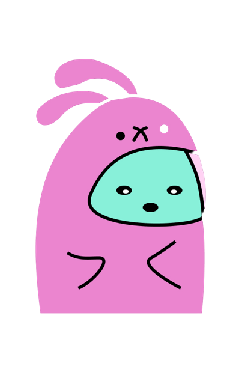

<!-- Navbar (sit on top) -->
<div class="top">
    <div class="w3-bar" style="height:inherit; align-items: center; background-color: black;" id="myNavbar">
        <a class="w3-bar-item w3-button w3-hover-black w3-hide-medium w3-hide-large" href="javascript:void(0);" style=" margin: 0px;margin-top: 14.5px; margin-bottom: 14.5px; font-size: 20px;" onclick="toggleFunction()" title="Toggle Navigation Menu">
            <i class="fa fa-bars"></i>
        </a>
        <a href="index.html" class="w3-bar-item w3-button navbar-stylers" style="font-size: 20px;"> Team Justus</a>
        <a href="accounts.html" class="w3-bar-item w3-button w3-hide-small ontheright navbar-stylers" style="font-size: 20px;"> Stories</a>
        <a href="about.html" class="w3-bar-item w3-button w3-hide-small ontheright navbar-stylers" style="font-size: 20px;"> About</a>
        <a href="contact.html" class="w3-bar-item w3-button w3-hide-small ontheright navbar-stylers" style="font-size:20px;"> Contact Us</a>
    </div>

    <!-- Navbar on small screens -->
    <div id="navDemo" class="w3-bar-block w3-black w3-hide w3-hide-large w3-hide-medium">
        <a href="index.html" class="w3-bar-item w3-button " style="font-size: 24px;" onclick="toggleFunction()">Home</a>
        <a href="accounts.html" class="w3-bar-item w3-button " style="font-size: 24px;" onclick="toggleFunction()">Stories</a>
        <a href="about.html" class="w3-bar-item w3-button " style="font-size: 24px;" onclick="toggleFunction()">About</a>
        <a href="contact.html" class="w3-bar-item w3-button " style="font-size: 24px;" onclick="toggleFunction()">Contact Us</a>
    </div>
</div>

<script src='scripts/delayedscript.js'></script>